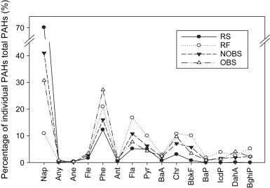

Solving e-waste is not as simple as it seems. Recycling, although ideal in theory, is less so in practice. Most e-waste is recycled in nations where labor is cheap and environmental restrictions are low.

Photo by Chien-Min Chung

From Wong et al
As a result, most recycling practices are bad for the environment, the people recycling, and even the industry itself.The chemicals present inside recycled electronics are released into the environment by being burned, dipped into acid, and thrown into rivers.